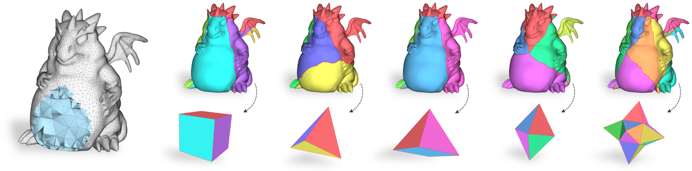

VOLMAP is a large-scale benchmark aimed to support ongoing research in volume mapping algorithms.
The dataset contains 4.7K tetrahedral meshes, whose boundary vertices are mapped to a variety of simple domains,
either convex or star-shaped. This data constitutes the input for candidate algorithms, which are then required to
position interior vertices in the domain to obtain a volume map. Overall, this yields more than 22K alternative test cases.
VOLMAP also comprises tools to process this data, analyze the resulting maps, and extend the dataset with new meshes,
boundary maps and base domains.
Dataset and tools are described in details in the article:
VOLMAP: a Large Scale Benchmark for Volume Mappings to Simple Base Domains
Computer Graphics Forum (SGP 2023)
Gianmarco Cherchi,
Marco Livesu
New: VOLMAP now also contains results obtained with some state-of-the-art volume mapping algorithms and new utilities to manage meshes with rational numbers!
Auxiliary code
VOLMAP includes a variety of facilities to ease the processing of the dataset, help assessing the quality of its results
and also extending it with additional models, maps and base domains (see Section 5.1 in the paper for more details).
Each tool described below has its own CMakeLists.txt file, and only depends on Cinolib.
Compiling each tool (unless otherwise described) simply consists of opening a terminal inside the tool folder and typing:
mkdir build
cd build
cmake .. -DCMAKE_BUILD_TYPE=Release -Dcinolib_DIR=<absolute-path-to-cinolib>
make
Tetmesh checks
This tool ensures that a tetrahedral mesh model.mesh satisfies the VOLMAP requirements to compute the surface mapping:
single connected component, genus zero, well structured surface (i.e., manifold, closed
and self-intersections free). The tool also checks the mesh tetrahedra according to the VOLMAP convention
(see Section 5.1 in the paper). If the input mesh follows an opposite convention, this tool flips all its elements,
saving a new file called model_inv.mesh.
The syntax for using it is:
./tetmesh_checks <filename.mesh>
For batch processing, check results can be appended to .csv log file instead of printing them on screen. In this case the syntax becomes:
./tetmesh_checks <filename.mesh> <log_file.csv>
Surface mapping
This tool implements the graph embedding strategy described in
Section 5 in the paper, mapping an input tetrahedral mesh onto one of the VOLMAP base domains. The syntax for using it is:
./surface_mapping_check <domain> <filename.mesh> <srf_mapping.txt>
where the <domain> param can be CUBE, PYRAMID, TETRAHEDRON, OCTAHEDRON or STAR.
The computed per-vertex boundary conditions are stored in the <srf_mapping.txt> file, with the structure
described in paragraph "File Formats" in Section 3 in the paper.
After using this tool, use the Surface mapping check tool to verify that
the generated mapping fulfills all the correctness requirements described in the paper.
The tool can also be used to map on simple custom domains not included in VOLMAP. To do so, users can provide an input file describing the abstract graph and its embedding.
Here you can find the instructions about how to construct this file.
Surface mapping check
This tool takes as input the original tetmesh and its boundary mapping
computed with the previous tool and checks if it fulfills all the correctness requirements described in the paper
(see "Sanity check" paragraph at the end of Section 5 for more details). The syntax for using it is:
./surface_mapping_check <filename.mesh> <srf_mapping.txt>
Metrics
This tool inputs the original tetmesh and its volume mapping computed with a candidate algorithm, and returns information regarding its validity and geometric distortion
as described in the paper (see "Metrics" paragraph in Section 5 for more details). The syntax for using it is:
./metrics <tetmesh.mesh> <vol_mapping.mesh>
Since some of the distortion metrics are unbounded and may tend to infinite in case of quasi degenerate elements, imposing an upper bound on the maximum value may be required.
By default, we set the max value to 100, but you can change it with the following syntax:
./metrics <tetmesh.mesh> <vol_mapping.mesh> <upper_bound>
Finally, it is possible to specify a .csv log file in which to append the measured values. In this case, the syntax becomes:
./metrics <tetmesh.mesh> <vol_mapping.mesh> <upper_bound> <log_file.csv>
Map visualization
This tool can be used
to visually inspect a volume mapping, plotting its inverted elements and color-coding tetrahdera according to some geometric
distortion. All metrics described in the paper are supported and can be selected through the user interface
(see "Map visualization" paragraph in Section 5 for more details). The syntax for using it is:
./map_visualization <tetmesh.mesh> <vol_mapping.mesh>
Tetmeshing
This tool takes as input a surface
mesh in .OBJ format and turn it into a tetrahedral mesh in .MESH format using Tetgen. After using this tool,
use the Tetmesh check tool to verify that the generated mesh satisfies the VOLMAP requirements. The syntax for using it is:
./tetmesh_generation <srf_mesh.obj>
Mesh format converter
This tool allows you to convert
a model from .MESH format to .VTK format and vice versa. Before compiling it, you need to install the
VTK library.
The syntax for using it is one of the following:
./mesh_convertes <filename.mesh> //OR
./mesh_convertes <filename.vtk>
Python scripts
In this folder, you
can find several Python scripts to execute the aforementioned tools on large collections of shapes or to launch experiments
with a given volume mapping algorithm. The description of each script is given as a comment at the top of each file.
Cite us
If you use our data or code for your academic project, please consider citing our paper using the following BibTeX entry:
@article{volmap2023,
title = {VOLMAP: a Large Scale Benchmark for Volume Mappings to Simple Base Domains},
author = {Cherchi, Gianmarco and Livesu, Marco},
journal = {Computer Graphics Forum},
year = {2023},
volume = {42},
number = {5},
issn = {1467-8659},
doi = {10.1111/cgf.14915}
}